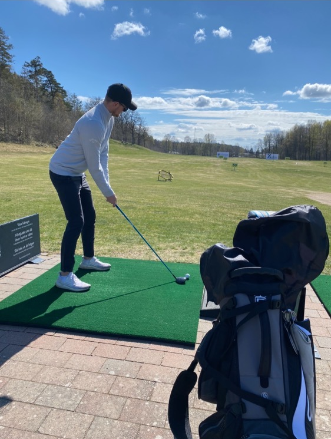

|  |
Rickard Bohman |
Dalsjö Golfklubb är min "riktiga" hemmaklubb,
(
PS. Det kallas för Hemmaklubb för det antyder vilken klubb man är medlem/skriven på!
) då det var den klubben som jag startade min golf karriär på.
Då jag började spela golf när jag var liten men lade klubborna på hyllan för att spela fotboll och innebandy fram till högstadiet då jag skadade mig.
Så då bestämde jag mig för att damma av klubborna igen och fastnade helt för sporten igen och gick med i juniorverksamheten ute på Dalsjö Golfklubb.
Då jag var en av dom äldre i gruppen så blev jag som en extra tränare så många frågade mig om hjälp så fort dom ordinarie tränarna var upptagna.
Jag tyckte det var väldigt roligt att se dom yngre utvecklas då dom yngsta i våran grupp var födda 02-04, då vi tävlade emot varandra nästan varje träning vilket gjorde det väldigt roligt att gå dit varje gång!
Man får tävla som junior fram tills det året du fyller 21år, så jag hann spela några år som junior innan jag blev för gammal för den klassen.
Då det finns 3:st olika nivåer på tävlingarna för juniorer, (First, Futsure och Elite), så började jag med att spela "First" klassen för att se hur det var att tävla.
Så jag spelade den klassen några gånger fram tills jag vann den efter ungefär 5 försök och då fick man en biljett till nästa klass som då var "Futsure" - klassen.
Första gången jag kom in på en "Futsure" tävling så var jag väldigt nervös så det gick inte riktigt som jag ville, men jag fortsatte att försöka fram tills jag blev för gammal för att klassas som en Junior längre.
Det finns olika slags lag-tävlingar inom golf: